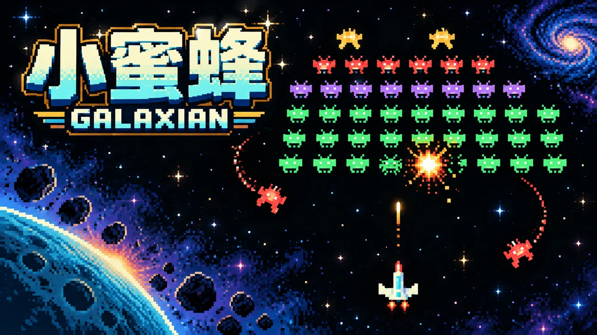
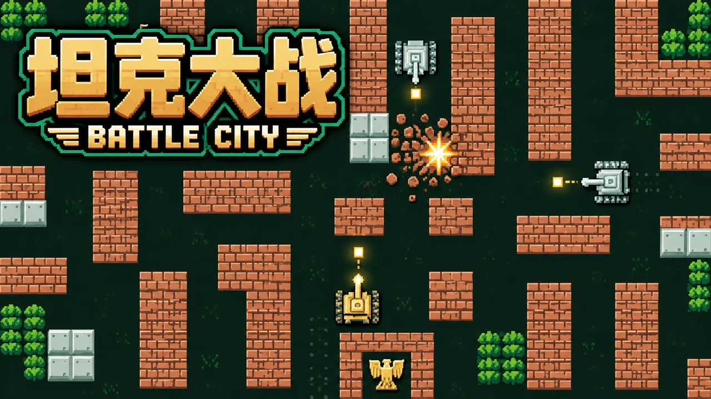
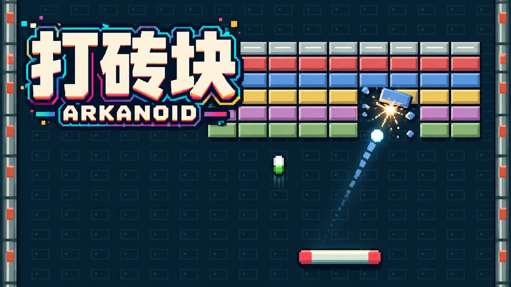
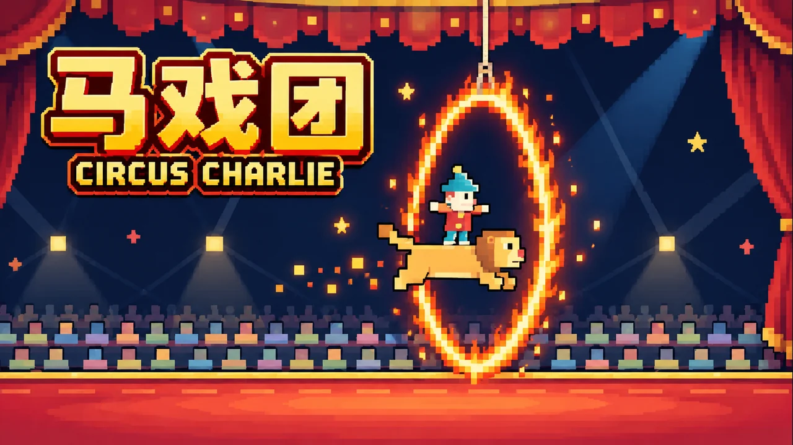
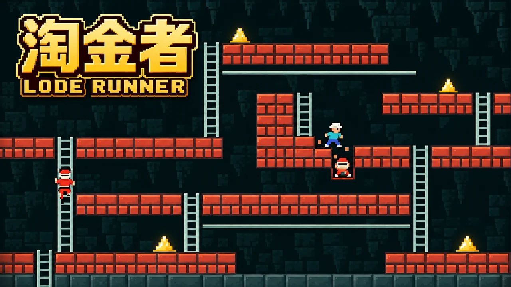

飞机划过星空，坦克守着堡垒。熟悉的像素，简单而认真的快乐。

守住最后一道星光，迎击俯冲蜂群。

轰开砖墙，别让敌人靠近基地。

接住每次反弹，击碎整面彩色砖墙。

跃过火圈，站上属于你的聚光灯。

挖洞甩开追兵，带着黄金找到出口。
转动双色胶囊，清空瓶里的小病毒。
每款游戏都能独立打开，进场后查看专属操作。
离开页面自动暂停。喝口水，回来继续。
记录留在当前浏览器，不需要登录，也没有排行榜压力。
选一张卡带即可进入。各游戏保留键盘操作，也提供画面内鼠标主操作和触屏按钮。
最高分等记录保存在当前浏览器；清理浏览器数据可能清除记录。